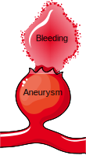

Ruptured aneurysm treatment
What are the consequences of aneurysm rupture?
Aneurysm rupture results in a severe headache caused by bleeding around the brain, termed subarachnoid haemorrhage. A common description of this is a “thunderclap” headache. It may be accompanied by a stiff neck, sickness, vomiting, sensitivity to light, and loss of consciousness. Aneurysmal haemorrhage may lead to death. Rates of death vary in different studies and range from 20-50% [1]. It is likely that the death rate from aneurysm rupture is decreasing over time due to advances in medical care.

A patient with a ruptured aneurysm is admitted to hospital. In the initial phase, the individual is placed in an intensive care unit (ICU) where healthcare professionals can closely monitor their condition. The duration of the hospital stay will differ from person to person. Depending on the severity of the condition, it may range from a couple of weeks to a longer duration.
One complication that may arise after aneurysm rupture is hydrocephalus. This condition is characterised by an accumulation of cerebrospinal fluid (CSF) in the brain, leading to increased pressure, which could potentially affect brain function. Management of hydrocephalus is often tackled by temporary methods like external ventricular drains or more permanent solutions such as a shunt. A shunt serves to divert the CSF to another part of the body where it can be reabsorbed more effectively.
Another significant complication that may follow aneurysm rupture is cerebral vasospasm. This involves the narrowing of the brain’s blood vessels, leading to reduced blood flow and potentially causing strokes and brain damage. Vasospasms usually occur a few days after the initial bleeding, making regular monitoring crucial. Medications, and sometimes additional procedures, are employed to mitigate this risk.
How are ruptured aneurysms treated?
Ruptured aneurysms require immediate treatment to prevent further bleeding, as the consequences of this may be disastrous. Two techniques are available to achieve this. The primary and less invasive method is endovascular coiling. In this procedure, a catheter is inserted into a blood vessel and guided towards the aneurysm, whereupon small coils are released. These coils facilitate blood clotting, thus averting further rupture. The National Institute for Health and Care Excellence (NICE) recommends endovascular treatment for aneurysmal rupture if it possible due to the significantly improved chance of survival following the treatment [1]. In addition, patients have a higher likelihood of living independently coupled with a reduced risk of developing seizures. This is based on evidence from high-quality clinical trials such as the International Subarachnoid Aneurysm Trial conducted over a period of 16 years [2].

The alternative method, surgical clipping, involves a neurosurgeon creating an opening in the skull and placing a metallic clip on the aneurysm’s neck, effectively blocking the blood flow within. This is performed in the minority of cases where endovascular treatment is not possible.

What are the long-term consequences of aneurysm rupture?
It is possible to make a full recovery from aneurysm rupture. Unfortunately, some patients are left with permanent disabilities, such as weakness in the face, hands, or legs, or speech or visual difficulties. Patients may also experience more vague symptoms that persist over time, such as a reduced ability to concentrate and frequent headaches.
References
Subarachnoid haemorrhage caused by a ruptured aneurysm: diagnosis and management. NICE guideline [NG228]. Published: 23 November 2022. Section 1.2.
Molyneux AJ, Birks J, Clarke A, Sneade M, Kerr RS. The durability of endovascular coiling versus neurosurgical clipping of ruptured brain aneurysms: 18 year follow-up of the UK cohort of the International Subarachnoid Aneurysm Trial (ISAT). Lancet. 2015 Feb 21;385(9969):691-7.